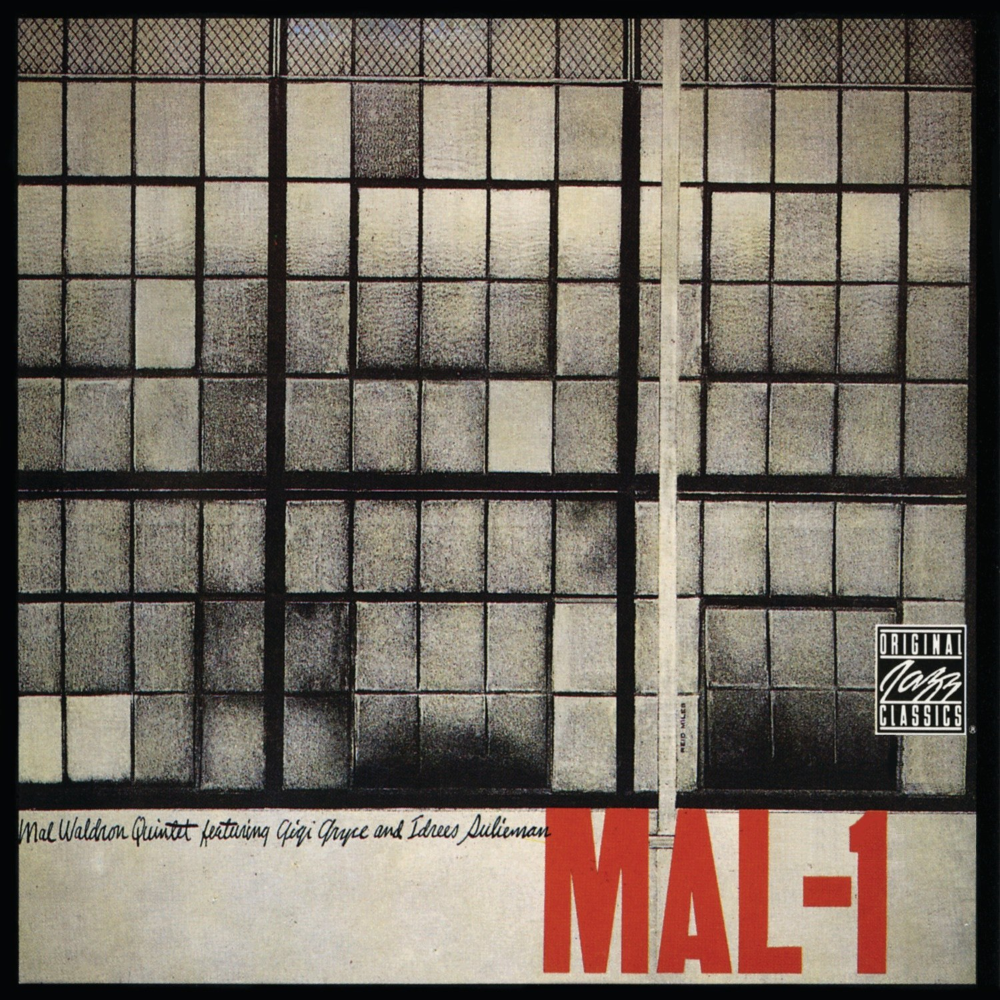
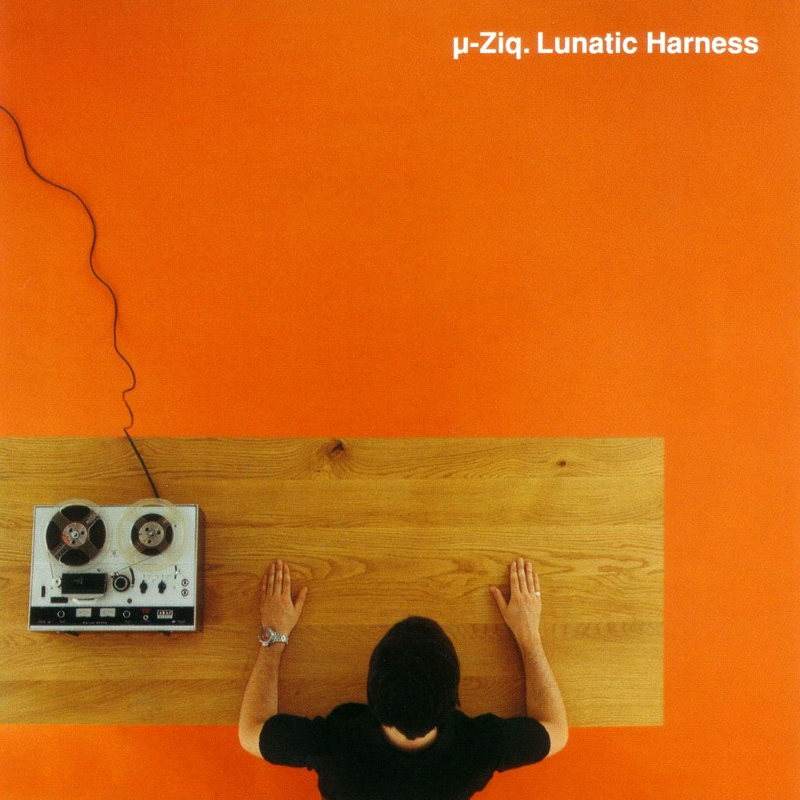
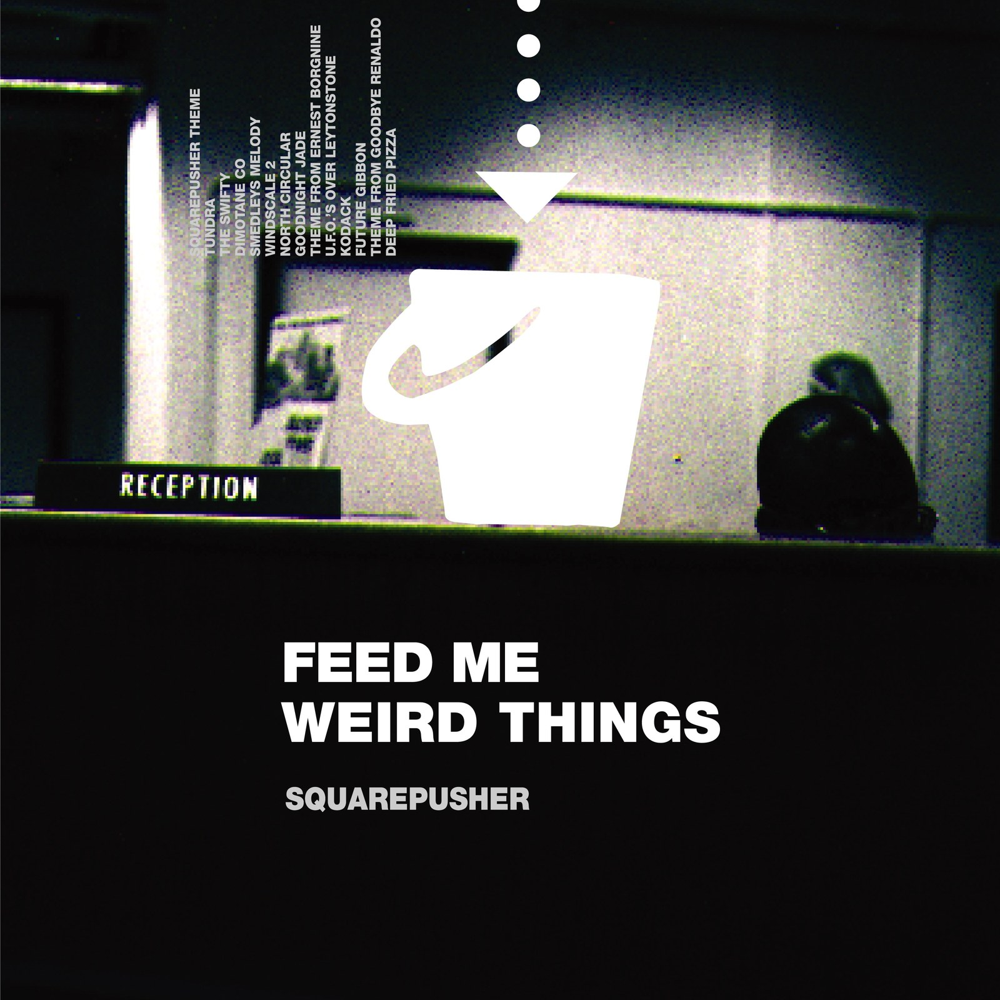
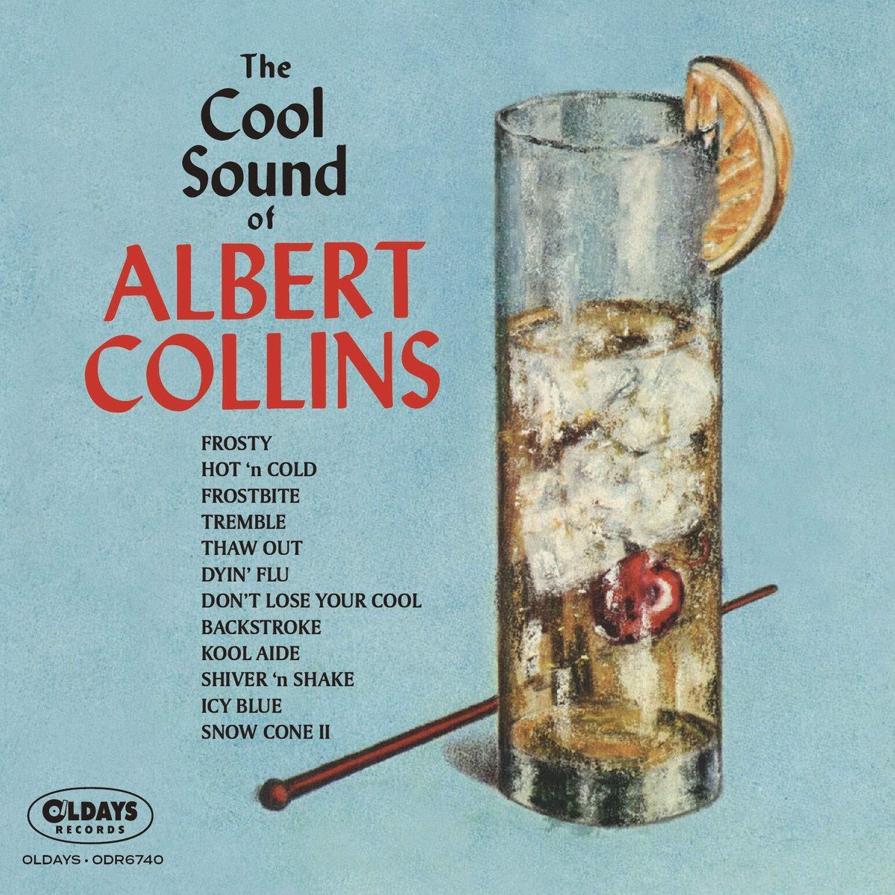
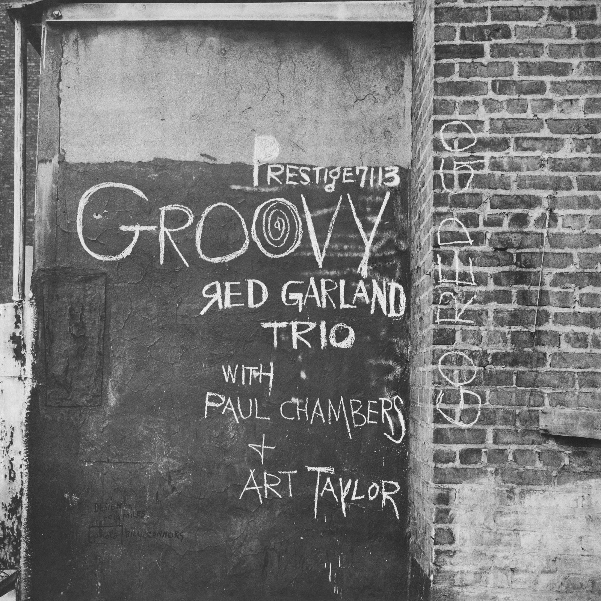

CRVI000038John Cage - Early Electronic And Tape Music
Designed by Mountain · Sub Rosa · 2014
Designed by Mountain · Sub Rosa · 2014

CRVI000177Hank Mobley - Tenor Conclave
Designed by Bob Weinstock · Prestige LP 7074 · 1956
Designed by Bob Weinstock · Prestige LP 7074 · 1956

CRVI000164Colosseum II - Electric Savage
Designed by John Pasche · MCA MCF2800 · 1977
Designed by John Pasche · MCA MCF2800 · 1977

CRVI000039Música Esporádica - Música Esporádica
Designed by Música Esporádica · Grabaciones Accidentales · 1985
Designed by Música Esporádica · Grabaciones Accidentales · 1985

CRVI000167Albert Ayler - New Grass
Designer unknown · 1969
Designer unknown · 1969

CRVI000035Lee Bannon - Fantastic Plastic
Artwork by Lazerus Pit · 2012
Artwork by Lazerus Pit · 2012

CRVI000052Com Truise - Galactic Melt
Artwork by Seth Haley · 2011
Artwork by Seth Haley · 2011

CRVI000051Tycho - Epoch
Designed by Scott Hansen · 2017
Designed by Scott Hansen · 2017

CRVI000154Mal Waldron - Mal-1
Designed by Reid Miles · Prestige LP 7090 · 1956
Designed by Reid Miles · Prestige LP 7090 · 1956

CRVI000082Klaus Weiss - Time Signals
Designer unknown · Selected Sound · 1978
Designer unknown · Selected Sound · 1978

CRVI000032Earle Brown - Music By Earle Brown
Artwork by Judith Lerner · Composers Recordings Inc. · 1974
Artwork by Judith Lerner · Composers Recordings Inc. · 1974

CRVI000096Stock, Hausen & Walkman - Organ Transplants Vol. 1
Designer unknown · Hot Air · 1996
Designer unknown · Hot Air · 1996

CRVI00004023 Skidoo - Seven Songs
Artwork by Neville Brody · Fetish Records · 1982
Artwork by Neville Brody · Fetish Records · 1982

CRVI000071David Kanaga - Dyad OGST
Designer unknown · Software · 2013
Designer unknown · Software · 2013

CRVI000171Sonny Rollins - The Sound of Sonny
Designer unknown · Riverside RLP 12-241 · 1957
Designer unknown · Riverside RLP 12-241 · 1957

CRVI000031Telefon Tel Aviv - Map of What Is Effortless
Designed by Joshua Eustis, Charles Cooper · Hefty Records · 2004
Designed by Joshua Eustis, Charles Cooper · Hefty Records · 2004

CRVI000079John Bender - I Don't Remember Now
Designer unknown · Record Sluts · 1980
Designer unknown · Record Sluts · 1980

CRVI000076Herva - Kila
Designer unknown · 2015
Designer unknown · 2015

CRVI000148Pharoah Sanders - Tauhid
Designed by Robert (Viceroy) Flynn · Impulse! AS-9138 · 1966
Designed by Robert (Viceroy) Flynn · Impulse! AS-9138 · 1966

CRVI000074F.C. Judd - Electronics Without Tears
Designer unknown · Public Information · 2012
Designer unknown · Public Information · 2012

CRVI000057B12 - Time Tourist
Designed by The Designers Republic, Trevor Webb · Warp Records · 1996
Designed by The Designers Republic, Trevor Webb · Warp Records · 1996

CRVI000101p-Ziq - Lunatic Harness
Designer unknown · Planet Mu / Virgin · 1997
Designer unknown · Planet Mu / Virgin · 1997

CRVI000165Bonzo Dog Band - The Doughnut in Granny's Greenhouse
Designed by Vivian Stanshall
Designed by Vivian Stanshall

CRVI000062Reliq - Minority Report
Artwork by Tomokazu Matsuyama · Noble · 2011
Artwork by Tomokazu Matsuyama · Noble · 2011

CRVI000027Cevdet Erek - Davul
Designed by John Coulthart · 2017
Designed by John Coulthart · 2017

CRVI000055Polygon Window - Surfing on Sine Waves
Artwork by The Designers Republic · Warp Records · 1992
Artwork by The Designers Republic · Warp Records · 1992

CRVI000083Kuedo - Severant
Designer unknown · Planet Mu · 2011
Designer unknown · Planet Mu · 2011

CRVI000067Bourbonese Qualk - My Government Is My Soul
Designer unknown · Fünfundvierzig · 1989
Designer unknown · Fünfundvierzig · 1989

CRVI000150Art Blakey's Jazz Messengers - Art Blakey's Jazz Messengers
Designed by Marvin Israel · Atlantic 1278 · 1957
Designed by Marvin Israel · Atlantic 1278 · 1957

CRVI000029Squarepusher - Feed Me Weird Things
Designed by Johnny Clayton, Tom Jenkinson · Rephlex · 1996
Designed by Johnny Clayton, Tom Jenkinson · Rephlex · 1996

CRVI000152Cressida - Asylum
Designed by Keef · Vertigo 6360 025 · 1971
Designed by Keef · Vertigo 6360 025 · 1971

CRVI000037Orb - Orbus Terrarum
Artwork by MadArk · Island Records · 1995
Artwork by MadArk · Island Records · 1995

CRVI000099Joel Vandroogenbroeck - Computer Blossoms
Designer unknown · Coloursound Library · 1981
Designer unknown · Coloursound Library · 1981

CRVI000017David Chesworth - 50 Synthesizer Greats
Designed by Geronimo Creative Services · Not On Label · 1979
Designed by Geronimo Creative Services · Not On Label · 1979

CRVI000048Oneohtrix Point Never - R Plus Seven
Designed by Robert Beatty · War facords · 2013
Designed by Robert Beatty · War facords · 2013

CRVI000059Various - The Philosophy of Sound and Machine
Designed by Third Earth · Applied Rhythmic Technology · 1992
Designed by Third Earth · Applied Rhythmic Technology · 1992

CRVI000145Gentle Giant - Octopus
Designed by Roger Dean · 1972
Designed by Roger Dean · 1972

CRVI000169Chet Baker - Chet Baker & Crew
Designer unknown · Pacific Jazz 1224 · 1956
Designer unknown · Pacific Jazz 1224 · 1956

CRVI000061Tom Cameron - Music To Wash Dishes By
Artwork by Tom Cameron · Bathing Records, Inc. · 1982
Artwork by Tom Cameron · Bathing Records, Inc. · 1982
CRVI000009The Future Sound Of London - Lifeforms
Artwork by Buggy G. Riphead · Virgin · 1994
Artwork by Buggy G. Riphead · Virgin · 1994

CRVI000073Event Cloak - Life Strategies
Designer unknown · 2017
Designer unknown · 2017

CRVI000097Tonto - It's About Time
Designer unknown · Polydor · 1974
Designer unknown · Polydor · 1974

CRVI000049Jon Appleton - The World Music Theatre Of Jon Appleton
Designed by Ronald Clyne · 1974
Designed by Ronald Clyne · 1974

CRVI000078Jega - Spectrum
Designer unknown · 1998
Designer unknown · 1998

CRVI000092Juan Blanco - Musica Electroacustica
Designer unknown · Areito
Designer unknown · Areito

CRVI000012Foodman - Ez Minzoku
Artwork by Ellen Thomas, Keith Rankin · 2017
Artwork by Ellen Thomas, Keith Rankin · 2017

CRVI000058Flying Lotus - Pattern +Grid World
Designed by Theo Ellsworth · Warp Records · 2010
Designed by Theo Ellsworth · Warp Records · 2010

CRVI000179Genesis - Nursery Cryme
Designed by Paul Whitehead · Charisma CAS1052 · 1971
Designed by Paul Whitehead · Charisma CAS1052 · 1971

CRVI000069Cluster - Cluster Il
Designer unknown · Brain · 1972
Designer unknown · Brain · 1972

CRVI000088Matmos - Supreme Balloon
Designer unknown · Matador · 2008
Designer unknown · Matador · 2008

CRVI000053Pierre Schaeffer - Le Trièdre Fertile
Designed by Stephen O'Malley · Philips · 1978
Designed by Stephen O'Malley · Philips · 1978

CRVI000011Cluster - Curiosum
Artwork by Dieter Moebius · Sky Records · 1981
Artwork by Dieter Moebius · Sky Records · 1981

CRVI000100Sid Bass - From Another World
Designer unknown · Vik · 1956
Designer unknown · Vik · 1956

CRVI000174The Modern Jazz Quartet - The Sheriff
Designer unknown · Atlantic 1414 · 1964
Designer unknown · Atlantic 1414 · 1964

CRVI000147The Grassella Oliphant Quartette - The Grass Roots
Designed by Loring Eutemey · 1965
Designed by Loring Eutemey · 1965

CRVI000056The Other People Place - Lifestyles Of The Laptop Café
Designed by The Designers Republic · 2001
Designed by The Designers Republic · 2001

CRVI000173Sonny Rollins - Work Time
Designer unknown · Prestige LP 7020 · 1955
Designer unknown · Prestige LP 7020 · 1955

CRVI000019Two Lone Swordsmen - Stay Down
Designed by Haywire, James Woodbourne · Warp · 1998
Designed by Haywire, James Woodbourne · Warp · 1998

CRVI000021Negativland - A Big 10-8 Place
Designed by Ian Allen, Mark Hosler · Seeland · 1983
Designed by Ian Allen, Mark Hosler · Seeland · 1983

CRVI000042Tropic Of Cancer - Restless Idylls
Designed by Oliver Smith · 2013
Designed by Oliver Smith · 2013

CRVI000094Various - Artificial Intelligence
Designer unknown · Warp · 1992
Designer unknown · Warp · 1992

CRVI000034Teams - Dxys Xff
Artwork by Jónó Mí Ló · AMDISCS · 2011
Artwork by Jónó Mí Ló · AMDISCS · 2011

CRVI000047Various - Hohokum Soundtrack
Designed by Richard Hogg · Ghostly International · 2014
Designed by Richard Hogg · Ghostly International · 2014

CRVI000008Boards Of Canada - Music Has The Right To Children
Designed by Boards Of Canada · Warp Records · 1998
Designed by Boards Of Canada · Warp Records · 1998

CRVI000182Albert Collins - The Cool Sound of Albert Collins
Designer unknown
Designer unknown

CRVI000003Thomas Fehlmann - Visions Of Blah
Designed by Bianca Strauch · Kompakt · 2002
Designed by Bianca Strauch · Kompakt · 2002

CRVI000030Equiknoxx - Bird Sound Power
Designed by Jon Kraus · DDS · 2016
Designed by Jon Kraus · DDS · 2016

CRVI000015FKA Twigs - LP 1
Designed by FKA Twigs, Phil Lee · Young Turks · 2014
Designed by FKA Twigs, Phil Lee · Young Turks · 2014

CRVI000010Flying Lotus - Los Angeles
Artwork by Commonwealth · Warp Records
Artwork by Commonwealth · Warp Records

CRVI000172Sonny Rollins - Way Out West
Designer unknown · Contemporary S7530
Designer unknown · Contemporary S7530

CRVI000065Blank Banshee - Blank Banshee 0
Designer unknown · Hologram Bay · 2012
Designer unknown · Hologram Bay · 2012
CRVI000178Sonny Rollins - Sonny Rollins
Designed by Bob Weinstock · Prestige LP 7029 · 1953
Designed by Bob Weinstock · Prestige LP 7029 · 1953

CRVI000183Dee Dee Sharp - Songs of Faith
Designer unknown · Cameo · 1962
Designer unknown · Cameo · 1962

CRVI000166Soft Machine - Seven
Designed by Roslav Szaybo · CBS 65799 · 1973
Designed by Roslav Szaybo · CBS 65799 · 1973

CRVI000013Giant Claw - Dark Web
Artwork by Ellen Thomas, Keith Rankin · 2014
Artwork by Ellen Thomas, Keith Rankin · 2014

CRVI000089FUSE - Dimension Intrusion
Designer unknown · Plus 8 Records · 1993
Designer unknown · Plus 8 Records · 1993

CRVI000016Frank Coe, Forrest J. Ackerman - Music For Robots
Designed by Frank Coe · Science Fiction Records · 1961
Designed by Frank Coe · Science Fiction Records · 1961

CRVI000103Visible Cloaks - Reassemblage
Designed by Will Work For Good · Rvng Intl. · 2017
Designed by Will Work For Good · Rvng Intl. · 2017

CRVI000093Cabaret Voltaire - The Crackdown
Designer unknown · Virgin · 1983
Designer unknown · Virgin · 1983

CRVI000023NxxxxxS - Fujita Scale
Artwork by Ivan Peev · Headcount Records · 2014
Artwork by Ivan Peev · Headcount Records · 2014

CRVI000143Kenny Drew - This Is New
Designed by Paul Bacon · 1957
Designed by Paul Bacon · 1957

CRVI000024The Caretaker - An Empty Bliss Beyond This World
Artwork by Ivan Seal · History Always Favours the Winners · 2011
Artwork by Ivan Seal · History Always Favours the Winners · 2011

CRVI000090Michal Turtle - Phantoms Of Dreamland
Designer unknown · 2016
Designer unknown · 2016

CRVI000146Bobby Timmons - Soul Time
Designed by Ken Deardoff · 1960
Designed by Ken Deardoff · 1960

CRVI000022Iannis Xenakis - Electro-Acoustic Music
Designed by Iannis Xenakis, Paula Bisacca · Nonesuch · 1970
Designed by Iannis Xenakis, Paula Bisacca · Nonesuch · 1970

CRVI000104Gábor Lázár - Crisis Of Representation
Artwork by Zsófia Boda · Shelter Press · 2017
Artwork by Zsófia Boda · Shelter Press · 2017

CRVI000180Tricky Lofton & Carmell Jones - Brass Bag
Designed by Woody Woodward · 1962
Designed by Woody Woodward · 1962

CRVI000005Rashad Becker - Traditional Music of Notional Species Vol. II
Artwork by Bill Kouligas · 2017
Artwork by Bill Kouligas · 2017

CRVI000091Nobukazu Takemura - Scope
Designer unknown · Thrill Jockey · 1999
Designer unknown · Thrill Jockey · 1999

CRVI000170Kestrel - Kestrel
Designer unknown
Designer unknown

CRVI000007The Black Dog - Spanners
Designed by Black Dog Productions, Richard Burridge, Think 1 · Warp Records · 1995
Designed by Black Dog Productions, Richard Burridge, Think 1 · Warp Records · 1995

CRVI000175Third Ear Band - Third Ear Band
Designer unknown · Harvest SHVL773 · 1970
Designer unknown · Harvest SHVL773 · 1970

CRVI000075H. Tical - Impact Synthesized Sound And Music
Designer unknown · Vedette Records · 1971
Designer unknown · Vedette Records · 1971

CRVI000054Autechre - Amber
Designed by The Designers Republic · Warp · 1994
Designed by The Designers Republic · Warp · 1994

CRVI000086Macintosh Plus - フローラルの専門店
Designer unknown · Beer On The Rug · 2011
Designer unknown · Beer On The Rug · 2011

CRVI000153Wynton Kelly - It's All Right!
Designed by Michael J. Malatak · 1964
Designed by Michael J. Malatak · 1964

CRVI000098Various - Midnite Spares
Designer unknown · Efficient Space · 2016
Designer unknown · Efficient Space · 2016

CRVI000068Randomize - ¿Cómo se divertirán los insectos?
Designer unknown · Grabaciones Accidentales · 1980
Designer unknown · Grabaciones Accidentales · 1980

CRVI000144Bud Shank Quartet - Jazz at Cal-Tech
Designed by William Claxton · Pacific Jazz 1219 · 1956
Designed by William Claxton · Pacific Jazz 1219 · 1956

CRVI000168Capability Brown - Voice
Designer unknown
Designer unknown

CRVI000045Various - Artificial Intelligence II
Artwork by Phil Wolstenholme, The Designers Republic · Warp · 1994
Artwork by Phil Wolstenholme, The Designers Republic · Warp · 1994

CRVI000001Paul Jebanasam - Rites
Designed by Alex Digard · 2013
Designed by Alex Digard · 2013

CRVI000151Charles Mingus - The Clown
Designed by Marvin Israel · Atlantic 1260 · 1957
Designed by Marvin Israel · Atlantic 1260 · 1957

CRVI000084Leyland Kirby - Eager To Tear Apart The Stars
Designer unknown · History Always Favours The Winners · 2011
Designer unknown · History Always Favours The Winners · 2011

CRVI000046Demdike Stare - Voices Of Dust
Designed by Radu Prepeleac · 2010
Designed by Radu Prepeleac · 2010

CRVI000044John Bender - Pop Surgery
Designed by Patrick Spenlau · Record Sluts · 1983
Designed by Patrick Spenlau · Record Sluts · 1983

CRVI000002Sote - Architectonic
Artwork by Arash Bolouri · Morphine Records · 2014
Artwork by Arash Bolouri · Morphine Records · 2014

CRVI000060Tito - Quetzalcóatl
Designed by Tito, Manuel Fornos · Discos Tiabi · 1977
Designed by Tito, Manuel Fornos · Discos Tiabi · 1977

CRVI000018Philip Perkins - Drive Time
Designed by Guy Orcutt · Fun Music · 1985
Designed by Guy Orcutt · Fun Music · 1985

CRVI000043Raime - Quarter Turns Over A Living Line
Designed by Oliver Smith · 2012
Designed by Oliver Smith · 2012

CRVI000070Pierre Henry - Mise En Musique Du Corticalart De Roger Lafosse
Designer unknown · Philips · 1971
Designer unknown · Philips · 1971

CRVI000080Karen Gwyer - Needs Continuum
Designer unknown · No Pain In Pop · 2013
Designer unknown · No Pain In Pop · 2013

CRVI000081Mort Garson - Didn’t You Hear?
Designer unknown · Custom Fidelity · 1970
Designer unknown · Custom Fidelity · 1970

CRVI000155Red Garland Trio - Groovy
Designed by Reid Miles · Prestige 7113 · 1957
Designed by Reid Miles · Prestige 7113 · 1957

CRVI000064Mouse On Mars - Dimensional People
Designer unknown · Thrill Jockey · 2018
Designer unknown · Thrill Jockey · 2018

CRVI000028Pete Swanson - Man With Potential
Designed by John Twells, Radu Prepeleac · Type · 2011
Designed by John Twells, Radu Prepeleac · Type · 2011

CRVI000041Kevin Harrison - Inscrutably Obvious
Designed by Obvious Products · Obvious · 1981
Designed by Obvious Products · Obvious · 1981

CRVI000072Euglossine - Sharp Time
Designer unknown · 2017
Designer unknown · 2017

CRVI000033Andy Stott - Too Many Voices
Artwork by Julie Lemberger · 2016
Artwork by Julie Lemberger · 2016

CRVI000066Bourbonese Qualk - Hope
Designer unknown · Recloose Organisation · 1984
Designer unknown · Recloose Organisation · 1984

CRVI000020Andy Stott - Faith In Strangers
Artwork by Herbert Matter · 2014
Artwork by Herbert Matter · 2014

CRVI000063Actress - R.I.P
Designer unknown · Honest Jon's Records · 2012
Designer unknown · Honest Jon's Records · 2012

CRVI000176The Beatles - Revolver
Designed by Klaus Voormann · Parlophone PCS7009 · 1966
Designed by Klaus Voormann · Parlophone PCS7009 · 1966

CRVI000102Actress - Splazsh
Designed by Will Bankhead · Honest Jon's Records · 2010
Designed by Will Bankhead · Honest Jon's Records · 2010

CRVI000004Laurel Halo - Chance Of Rain
Designed by Bill Kouligas · Hyperdub · 2013
Designed by Bill Kouligas · Hyperdub · 2013

CRVI000026Blessed Initiative - Blessed Initiative
Designed by John Coulthart · Subtext · 2016
Designed by John Coulthart · Subtext · 2016

CRVI000014Bernard Bonnier - Casse‐tête
Designed by Eric Mattson · Amaryllis · 1984
Designed by Eric Mattson · Amaryllis · 1984

CRVI000085Lussuria - American Babylon
Designer unknown · Hospital Productions · 2012
Designer unknown · Hospital Productions · 2012

CRVI000050Shackleton & Vengeance Tenfold - Sferic Ghost Transmits
Designed by Sandhya Ellis · Honest Jon's Records · 2017
Designed by Sandhya Ellis · Honest Jon's Records · 2017

CRVI000006Objekt - Flatland
Artwork by Bill Kouligas, Kathryn Politis, Traianos Pakioufakis · Pan · 2014
Artwork by Bill Kouligas, Kathryn Politis, Traianos Pakioufakis · Pan · 2014

CRVI000095Martin Davorin Jagodic - Tempo Furioso (Tolles Wetter)
Designer unknown · nova musicha - n. 8 · 1975
Designer unknown · nova musicha - n. 8 · 1975

CRVI000077Fluence - Fluence
Designer unknown · Pôle Records · 1975
Designer unknown · Pôle Records · 1975

CRVI000036Various - Close to the Noise Floor (Formative UK Electronica 1975-1984)
Designed by Lora Findlay · 2016
Designed by Lora Findlay · 2016

CRVI000025Gesellschaft Zur Emanzipation Des Samples - Circulations
Designed by Jens Reitemeyer · Faitiche · 2009
Designed by Jens Reitemeyer · Faitiche · 2009

CRVI000087Tiziano Popoli, Marco Dalpane - Scorie
Designer unknown · Yaki Record · 1985
Designer unknown · Yaki Record · 1985